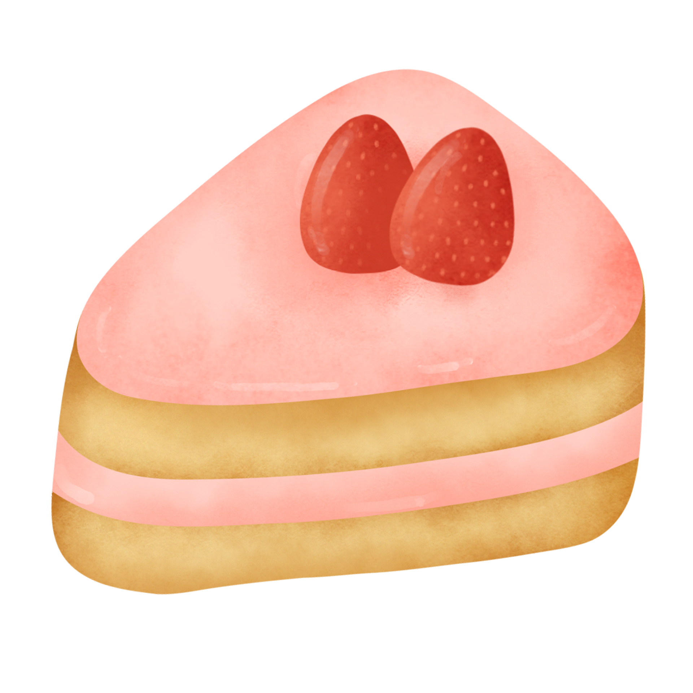

Welcome to Sugarlace, the finest online destination for delicious and custom-made cakes in Winnipeg!
At Sugarlace, we believe that every celebration deserves a sweet touch. Whether you're marking a special occasion or simply treating yourself, our cakes are crafted with care, using only the finest ingredients to create the most flavorful and beautiful cakes in town.
We offer a wide variety of cakes to suit every taste and occasion. From classic flavors like chocolate, vanilla, and red velvet to unique creations like matcha and salted caramel, there's something for everyone. Each cake is made to order and can be customized with your choice of design, frosting, and fillings, ensuring that your cake is as unique as your celebration.
Have questions or need assistance with your order? Our friendly team is here to help! Feel free to reach out to us via our contact page